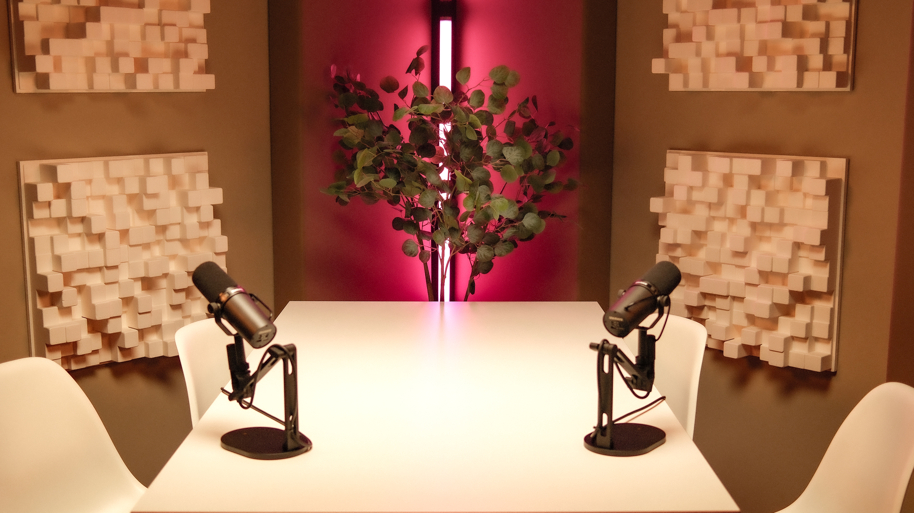

Podcast Studio
in Frankfurt
Playroom Studios ist ein professionelles Podcast und Videopodcast Studio in Frankfurt am Main. Unser Studio wurde ursprünglich für hochwertige Audio- und Postproduktionsarbeiten konzipiert und bietet deshalb ideale Voraussetzungen für Podcastaufnahmen mit exzellenter Klangqualität.
Der Aufnahmeraum ist akustisch optimiert und ermöglicht klare, natürliche Gespräche ohne störende Raumreflexionen oder Hintergrundgeräusche.
Gäste, Moderation und Produktion arbeiten in einer Umgebung, die sowohl technisch professionell als auch angenehm und entspannt ist – ein wichtiger Faktor für authentische Gespräche.

Fokus-Setup
Klassischer Podcast-Tisch mit Mikrofonen und Akzentbeleuchtung. Ideal für Interviews, Deep Dives und fachliche Gespräche.

Lounge-Setup
Bequeme Sofas, warmes Licht, entspannte Atmosphäre. Perfekt für lockere Talks und Storytelling-Formate.